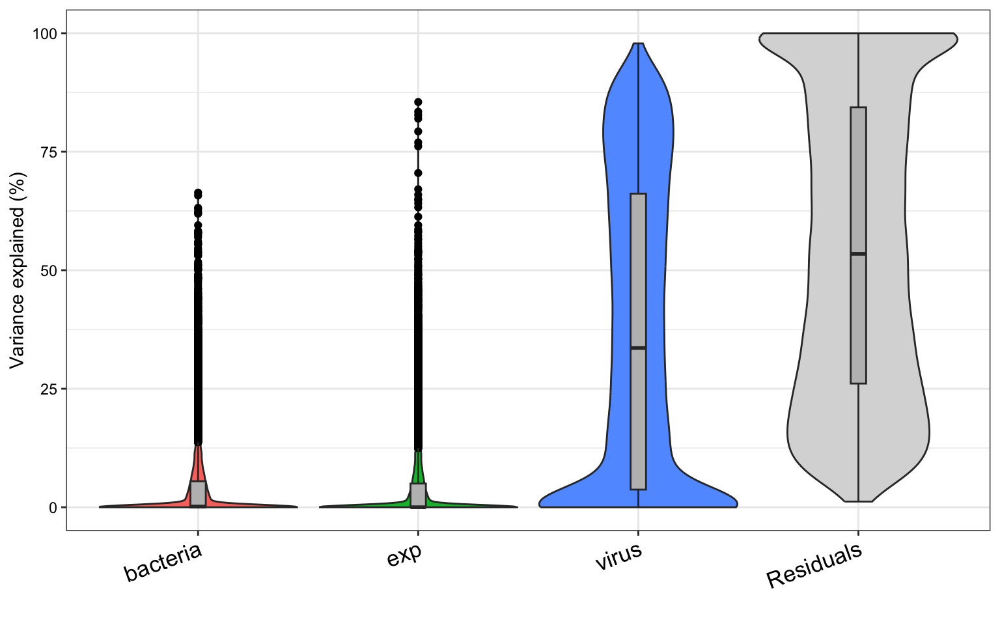

# Set up your R environment
library(tidyverse)
library(here)
library(tximport)
library(DESeq2)
library(vsn)
library(edgeR)
library(variancePartition)
library(ashr)
library(SummarizedExperiment)
SE_DIR <- here("../inst/extdata/SE")Create SE for CONTENTO
Overview
CONTENTO expects a single SummarizedExperiment (SE) object (.rds) containing expression data, differential expression results for every contrast, and descriptive metadata. This document walks through building that object with DESeq2 from two common quantification outputs: per-sample featureCounts files (Example 1) and RSEM gene-level results imported with tximport (Example 2). CONTENTO itself is agnostic to how the downstream analysis was performed. If you have a different quantification method (e.g. Salmon) or a different DE tool (e.g. edgeR, limma-voom), you can still build a compatible SE as long as you reproduce the following structure.
A CONTENTO-compatible SE has four required components:
- assays: must contain an assay named
expr_matrix, which provides the expression values used by CONTENTO visualizations and downstream analyses. - rowData: one row per gene, with DE statistics for each contrast stored as columns named
<name>__<contrast_name>(double underscore separator, e.g.log2FC__VirusTvsF_NB,padj__VirusTvsF_NB). CONTENTO is agnostic to the DE tool used, but requires these exact generic statistic names:log2FC,statandpadj(required for every contrast), andlog2FC_shrunk(optional). If your tool uses different names (e.g. DESeq2’slog2FoldChange, edgeR’slogFC), rename the columns to this vocabulary before building the SE (see Step 4 below). Any other columns you include (e.g.baseMean,lfcSE) are carried through but not used by CONTENTO. - colData: sample-level metadata (experimental factors used for grouping/coloring in plots).
- metadata(se): a list with, at minimum,
contrasts(a character vector of unique contrast names matching the__<contrast_name>suffixes described above). Optional fieldsorganismandannotationunlock MSigDB-based GSEA and annotation loading, respectively (see the annotation article for details). Two further optional fields fine-tune the CONTENTO experience:db_species: character string,"HS"or"MM". By default, CONTENTO picks the MSigDB source database automatically:"MM"(mouse-curated) only whenorganismis exactly"Mus musculus", and"HS"(human-curated) for every othermsigdbr-supported organism. Setdb_speciesto override that default — e.g. to force human-curated gene sets for a mouse dataset, or mouse-curated gene sets ortholog-mapped onto another species, instead of the automatic choice. Note thatorganismmust still be a speciesmsigdbrrecognizes for ortholog mapping;db_speciesdoes not extend MSigDB support to organismsmsigdbrdoesn’t already support.dataset_name: character string used as the base filename prefix for every file downloaded from CONTENTO (tables, plots, etc.). If omitted, CONTENTO falls back to the uploaded SE filename, or"CONTENTO"if that isn’t available either.
| Feature | Required SE component |
|---|---|
| DE tables & volcano plots | rowData contrast columns |
| Expression Plot / Heatmap / GESECA | expr_matrix assay |
| Variance Decomposition tab | optional varpart_* rowData columns |
| MSigDB GSEA | metadata(se)$organism matching a valid msigdbr species (metadata(se)$db_species optionally overrides which source database — human or mouse — is queried) |
| Neighborhood Analysis (bacteria) | metadata(se)$organism == "Bacteria" + annotation with coordinates |
Workflow
Both examples below follow the same sequence:
- Metadata Preparation: load sample metadata and set factor levels/labels.
- Data Import: read the per-sample quantification files into a count matrix (Example 1, featureCounts) or a
tximportobject (Example 2, RSEM). - Exploratory DESeq2 Analysis (Optional): fit a simple model and inspect a PCA to inspect the data before committing to a final design.
- Differential Expression Analysis: fit the full design, extract one or more contrasts, and rename output columns to CONTENTO’s generic vocabulary (
log2FC,stat,padj). - Create Expression Matrix: extract the expression matrix for use in CONTENTO (normalization recommended).
- Create SummarizedExperiment (SE) Object: assemble assays, rowData, colData, and metadata with
convert_to_SE().
The two examples cover different parts of CONTENTO. Pick the one closest to your data and borrow from the other as needed: import routes, designs and organisms are interchangeable (e.g. bacterial featureCounts files can go through the Example 1 import and the Example 2 design with multiple contrasts).
| Example 1 | Example 2 | |
|---|---|---|
| Dataset | S. aureus LAC alone in EBSS vs LAC on HNO | RSV infection × four bacterial conditions in HNO-ALI cultures |
| Import | featureCounts files → count matrix → DESeqDataSetFromMatrix() |
RSEM → tximport → DESeqDataSetFromTximport() |
| Design | ~ media + exp, one contrast (HNO vs EBSS) |
~ virus + bacteria + virus:bacteria + exp, several contrasts + variance partitioning |
organism |
"Bacteria" → Neighborhood Analysis |
"Homo sapiens" → MSigDB GSEA |
annotation |
Sau_KPL4403_annot (anvi’o, built in) |
Homo_sapiens.GRCh38.113_annot (built in) |
| Output | Example1_SE.rds |
Example2_SE.rds |
Both datasets are used only to demonstrate the workflow. Example 1 is a simplified subset of a larger experiment (culture condition and experiment date only), and its results should not be interpreted biologically.
Helper Functions
Both examples use the two helper functions below. Run this section once before either example.
run_contrast_analysis()
This function runs the DESeq2 results() and lfcShrink() functions for a given contrast or coefficient, returning a data frame with the results. It handles both types of contrasts (main effects and interaction terms) and adds the contrast name to the results for easier identification.
run_contrast_analysis <- function(dds, contrast_name, contrast = NULL, coef = NULL) {
if (!is.null(contrast)) {
res <- results(dds, contrast = contrast, alpha = 0.05)
resLFC <- lfcShrink(dds, contrast = contrast, type = "ashr")
} else if (!is.null(coef)) {
res <- results(dds, name = coef, alpha = 0.05)
resLFC <- lfcShrink(dds, coef = coef, type = "ashr")
} else {
stop("Please provide either a 'contrast' or a 'coef'.")
}
res_df <- as.data.frame(res)
res_df$Geneid <- rownames(res_df)
res_df$contrast <- contrast_name
res_df$log2FoldChange_shrunk <- as.data.frame(resLFC)$log2FoldChange[
match(res_df$Geneid, rownames(resLFC))
]
return(res_df)
}convert_to_SE()
convert_to_SE() builds the final SE object. It reshapes the long-format differential expression results into the wide-format rowData structure expected by CONTENTO, where each statistic is stored in a separate column with the pattern <statistic>__<contrast_name>. It attaches sample metadata as colData, stores the expression matrix in the expr_matrix assay, optionally merges variance-partition results as varpart_* columns, and records contrasts, organism, annotation, db_species, and dataset_name in metadata(se). The same function can be reused regardless of experimental design or the number of contrasts being included.
convert_to_SE <- function(dds, contrasts_df, expr_matrix,
organism = NULL, annotation = NULL, varpart = NULL,
db_species = NULL, dataset_name = NULL) {
# Reshape to wide format
contrasts_wide <- contrasts_df %>%
pivot_wider(
id_cols = Geneid,
names_from = contrast,
values_from = -c(Geneid, contrast),
names_sep = "__"
)
contrasts_found <- unique(contrasts_df$contrast)
cat("✓ Found", length(contrasts_found), "contrasts:", paste(contrasts_found, collapse = ", "), "\n")
# Extract sample metadata
sample_metadata <- as.data.frame(colData(dds))
# Create rowData with Geneid as rownames
rowdata_df <- contrasts_wide %>%
column_to_rownames("Geneid")
# Add variance partition data if provided
if (!is.null(varpart)) {
cat("Loading variance partition data...\n")
tryCatch({
# Extract only the variance partition matrix
varpart_matrix <- varpart$varPart
# Get common genes between rowData and varPart
common_genes <- intersect(rownames(rowdata_df), rownames(varpart_matrix))
if (length(common_genes) > 0) {
# Convert to dataframe and add varpart_ prefix
varpart_df <- as.data.frame(varpart_matrix[common_genes, , drop = FALSE])
colnames(varpart_df) <- paste0("varpart_", colnames(varpart_df))
# Merge with rowdata_df (only for genes that exist in both)
rowdata_df[common_genes, colnames(varpart_df)] <- varpart_df
cat("✓ Added variance partition for", length(common_genes), "genes\n")
cat(" Factors:", paste(gsub("varpart_", "", colnames(varpart_df)), collapse = ", "), "\n")
} else {
cat("⚠ No common genes between contrasts and variance partition\n")
}
}, error = function(e) {
cat("⚠ Error loading variance partition:", e$message, "\n")
})
}
# Ensure rowData order matches dds
rowdata_df <- rowdata_df[rownames(dds), ]
# Verify dimensions match
stopifnot(identical(rownames(rowdata_df), rownames(dds)))
stopifnot(identical(rownames(sample_metadata), colnames(dds)))
cat("✓ Gene order verified:", nrow(rowdata_df), "genes match\n")
# Create SummarizedExperiment
se <- SummarizedExperiment(
assays = list(expr_matrix = expr_matrix),
colData = DataFrame(sample_metadata),
rowData = DataFrame(rowdata_df)
)
# Store metadata
metadata(se) <- list(
design = design(dds),
contrasts = contrasts_found,
organism = organism,
annotation = annotation,
db_species = db_species, # optional: "HS" or "MM", overrides automatic msigdbr routing
dataset_name = dataset_name, # optional: base filename prefix for CONTENTO downloads
date = Sys.Date() # recorded for reproducibility but not read by CONTENTO itself
)
# Return the SummarizedExperiment object
cat(" Dimensions:", nrow(se), "genes x", ncol(se), "samples\n")
cat(" Assays:", paste(names(assays(se)), collapse = ", "), "\n")
cat(" Columns in rowData:", ncol(rowData(se)), "\n\n")
return(se)
}Example 1
Example 2
A more complex experiment examining RSV infection across four bacterial conditions (NB, Spn, Hin, and Dpi) in HNO-ALI cultures. The design models virus status, bacterial condition, and their interaction while accounting for variation across independent experiments.
Step 1. Metadata Preparation
meta must contain one row per sample, a file_base column matching your RSEM output filenames, and the experimental factor columns used in the design formula below.
# Read metadata file
meta <- read_csv(file.path(SE_DIR, "Example2_metadata.csv"))
# Create unique condition and label for each sample. This will be used by CONTENTO for visualization.
meta <- meta |>
mutate(
bacteria = factor(bacteria, levels = c("NB", "Spn", "Hin", "Dpi")), # NB (No-Bacteria) is the reference level
virus = factor(virus, levels = c("FALSE", "TRUE")),
exp = factor(exp),
condition = interaction(bacteria, virus, sep = "_"), # unique condition for each sample
label = interaction(bacteria, virus, exp, sep = " | ") # unique label for each sample
)Step 2. Data Import
The tximport [@tximport] function reads in gene-level quantification results from RSEM and organizes them into a structured list for downstream analysis. It extracts estimated counts, transcript lengths, and abundance values, ensuring compatibility with DESeq2 and other Bioconductor workflows. Since some transcripts may have a reported length of 0, we update those to 1 to prevent issues during analysis.
# Import data using tximport
rsem_folder <- file.path(SE_DIR, "rsem_counts")
count_files <- file.path(rsem_folder, paste0(meta$file_base, ".genes.results"))
names(count_files) <- meta$label
txi <- tximport(count_files, type = "rsem", txIn = FALSE, txOut = FALSE)
txi$length[txi$length == 0] <- 1Step 3. Exploratory DESeq2 Analysis
We run an initial DESeq model design to explore the data. It does not consider the interaction between variables. We only use it to explore the data and possible effects for the 3 independent experiments. The design formula is ~ bacteria + virus + exp, which accounts for the main effects of bacteria, virus, and experiment without considering their interactions. This allows us to assess the individual contributions of each factor to gene expression changes. This exploratory fit is only used for the PCA check below, it is not the design used for contrast extraction, which comes later.
# DESeq design
dds <- DESeqDataSetFromTximport(txi,
colData = meta,
design = ~ virus + bacteria + exp)
# Run DESeq
dds <- DESeq(dds)Principal Component Analysis (PCA)
PCA calculated based on the VST normalized [@tibshirani1988; @huber2003; @Anders2010] data using ntop=500 top features by variance. Samples from different experiments were interspersed rather than clustered, suggesting that the experimental batch effect was not a major source of variation in the data.
vsd <- vst(dds, blind = TRUE)
pcaData <- plotPCA(vsd, intgroup = c("bacteria", "virus", "exp"), returnData = TRUE)
percentVar <- round(100 * attr(pcaData, "percentVar"))
Bac.Vir_colors = c("#CC9564", "#a89de0", "#f54590", "#2e67f2", "#856141","#6855c9","#9f2d5e", "#1e439d")
Bac.Vir_fill <- c("white", "white", "white", "white", "#856141","#6855c9","#9f2d5e", "#1e439d")
ggplot(pcaData, aes(PC1, PC2)) +
geom_point(aes(fill = condition, color = condition,
shape = exp),
size = 4, stroke = 1) +
scale_shape_manual(values = c(23, 25, 21)) +
scale_color_manual(values = Bac.Vir_colors) +
scale_fill_manual(values = Bac.Vir_fill) +
ggtitle("Principal Component Analysis (blind = TRUE)") +
xlab(paste0("PC1: ", percentVar[1], "% variance")) +
ylab(paste0("PC2: ", percentVar[2], "% variance")) +
theme_bw(base_size = 14) +
theme(
panel.grid.major = element_blank(),
panel.grid.minor = element_blank()
) +
guides(
color = guide_legend(title = "condition", override.aes = list(color = Bac.Vir_colors, shape = 22))
)
Variance Partitioning Analysis
In this more complex design we are also interested in quantifying the contribution of each factor (virus, bacteria, and experiment) to the overall variance in gene expression. This is particularly important for understanding how much of the observed variability can be attributed to biological factors versus technical or experimental factors. CONTENTO allows users to visualize the variance partitioning results for each gene, providing insights into the relative importance of each factor in shaping gene expression patterns.
Gene-level expression values were modeled using precision weights estimated with the limma::voom() transformation, which accounts for the mean–variance relationship in RNA-seq data. Lowly expressed genes can be filtered using edgeR::filterByExpr(), which removes genes with insufficient counts for reliable statistical analysis and improves the stability of downstream variance estimates.
We use the variancePartition [@hoffman2017] package, which quantifies the proportion of variance in gene expression attributable to each factor in a linear mixed model.
run_varPart_analysis <- function(txi, meta, formula_vp, formula_fixed, filter_low_expr = TRUE) {
# Align meta to sample order
meta <- as.data.frame(meta)
meta <- meta[match(colnames(txi$counts), meta$label), ]
rownames(meta) <- meta$label
stopifnot(identical(rownames(meta), colnames(txi$counts)))
# Design matrix: only fixed effects (for voom & filterByExpr)
design <- model.matrix(formula_fixed, data = meta)
# Normalize counts
counts <- DGEList(txi$counts)
counts <- normLibSizes(counts)
# Filter low-expressed genes
if (filter_low_expr) {
keep <- filterByExpr(counts, design)
counts_used <- counts[keep, ]
} else {
counts_used <- counts
}
# logCPM values with voom
v <- voom(counts_used, design)
# Fit variance partition model (supports random effects)
varPart <- fitExtractVarPartModel(v, formula_vp, meta)
# Format results
varPart_df <- as.data.frame(varPart)
varPart_df$Geneid <- rownames(varPart_df)
# Return
return(list(v = v, varPart = varPart, varPart_df = varPart_df))
}Use formula_fixed with fixed effects (required for the design matrix step) while formula_vp is used to decompose variance across bacteria/virus/exp as random intercepts
formula_fixed <- ~ virus + bacteria + exp # for voom/filterByExpr design matrix
formula_vp <- ~ (1|virus) + (1|bacteria) + (1|exp) # for variance partitioning you can't mix fixed and random categorical variables in the same call
varPart <- run_varPart_analysis(txi, meta, formula_vp, formula_fixed, filter_low_expr = T)
plotVarPart(varPart$varPart) 
Step 4. Differential Expression Analysis
This design captures all the variables of interest. - virus + bacteria + virus:bacteria Includes main effects of virus and bacteria, as well as their interaction. This allows us to test whether the effect of virus depends on the species. This is equivalent to virus * bacteria. - exp To account for the batch effect of the 3 independent experiments, we include the experiment as a covariate in the model. This helps to control for any variability introduced by differences between experiments.
# DESeq design
dds <- DESeqDataSetFromTximport(txi,
colData = meta,
design = ~ virus + bacteria + virus:bacteria + exp)
# Run DESeq
dds <- DESeq(dds)Generate Contrast Results
Virus TRUE vs FALSE in each Species
This section tests the effect of virus infection (TRUE vs FALSE) within each bacterial species specifically:
- For the reference bacteria condition (NB), the virus effect is captured by the main coefficient
virus_TRUE_vs_FALSE. - For other bacteria conditions (Spn, Hin, Dpi), the virus effect is a combination of the main virus effect plus the interaction term (e.g.,
virusTRUE.bacteriaDpi).
contrast_list_Virus_TvsF <- list(
VirusTvsF_NB = "virus_TRUE_vs_FALSE",
VirusTvsF_Spn = list(c("virus_TRUE_vs_FALSE", "virusTRUE.bacteriaSpn")),
VirusTvsF_Hin = list(c("virus_TRUE_vs_FALSE", "virusTRUE.bacteriaHin")),
VirusTvsF_Dpi = list(c("virus_TRUE_vs_FALSE", "virusTRUE.bacteriaDpi"))
)
results_Virus_TvsF <- imap(contrast_list_Virus_TvsF, function(contrast_val, name) {
if (is.character(contrast_val)) {
run_contrast_analysis(dds, contrast_name = name, coef = contrast_val)
} else {
run_contrast_analysis(dds, contrast_name = name, contrast = contrast_val)
}
})Difference in Virus Effect Compared to NB
Here we focus on whether the virus effect differs between each bacteria condition and relative to the reference NB. This highlights species-specific modulation of virus response by comparing the virus effect in each bacteria against the baseline virus effect in NB.
- We use the interaction terms alone (e.g.,
virusTRUE.bacteriaDpi), which quantify how much the virus effect in each species deviates from that in NB.
contrast_list_VirusInteract_vsNB <- list(
VirusInteract_Dpi = "virusTRUE.bacteriaDpi",
VirusInteract_Spn = "virusTRUE.bacteriaSpn",
VirusInteract_Hin = "virusTRUE.bacteriaHin"
)
results_VirusInteract_vsNB <- imap(contrast_list_VirusInteract_vsNB, ~ run_contrast_analysis(dds, contrast_name = .y, coef = .x,))Bacteria vs NB in Virus FALSE
This comparison evaluates how each bacterial species differs from the reference NB when virus is absent (virus = FALSE). This reveals baseline species-specific gene expression differences without virus influence.
- Because virus FALSE is the baseline in the model, these contrasts use only the main bacteria effects (e.g.,
bacteria_Dpi_vs_NB).
contrast_list_Bacteria_vsNB_VF <- list(
DpivsNB_VF = "bacteria_Dpi_vs_NB",
SpnvsNB_VF = "bacteria_Spn_vs_NB",
HinvsNB_VF = "bacteria_Hin_vs_NB"
)
results_Species_vsNB_VF <- imap(contrast_list_Bacteria_vsNB_VF, ~ run_contrast_analysis(dds, contrast_name = .y, coef = .x))Bacteria vs NB in Virus TRUE
Here we test the bacteria differences under virus infection (virus = TRUE). This reveals species-specific gene expression differences that might occur under virus influence.
- These contrasts combine the main bacteria effect plus the interaction with virus (e.g.,
bacteria_Dpi_vs_NB+virusTRUE.bacteriaDpi).
contrast_list_Bacteria_vsNB_VT <- list(
DpivsNB_VT = list(c("bacteria_Dpi_vs_NB", "virusTRUE.bacteriaDpi")),
SpnvsNB_VT = list(c("bacteria_Spn_vs_NB", "virusTRUE.bacteriaSpn")),
HinvsNB_VT = list(c("bacteria_Hin_vs_NB", "virusTRUE.bacteriaHin"))
)
results_Bacteria_vsNB_VT <- imap(contrast_list_Bacteria_vsNB_VT, ~ run_contrast_analysis(dds, contrast_name = .y, contrast = .x))Combine All Contrast Results
all_contrast_results <- list(
results_Virus_TvsF,
results_VirusInteract_vsNB,
results_Species_vsNB_VF,
results_Bacteria_vsNB_VT
) %>% flatten()
all_contrast_df <- bind_rows(all_contrast_results)
IMPORTANT:
CONTENTO requires generic column names so it works with any DE tool, not just DESeq2. Required: log2FC, stat, padj. Optional: log2FC_shrunk. DESeq2’s results() already outputs stat and padj with the right names — only log2FoldChange (and log2FoldChange_shrunk) need renaming.
all_contrast_df <- all_contrast_df |>
dplyr::rename(log2FC = log2FoldChange, log2FC_shrunk = log2FoldChange_shrunk)Step 5. Create Expression Matrix
As in Example 1, the expression matrix can be generated using any normalization or transformation method suitable for downstream visualization and exploratory analysis. Here we use the DESeq2 variance stabilizing transformation (VST).
expr_matrix <- assay(vst(dds, blind = FALSE))Step 6. Create SummarizedExperiment (SE) Object
We use convert_to_SE() to build the final SE object. In this case, we also include the variance partitioning results as additional columns in rowData, which can be visualized in CONTENTO’s Variance Decomposition tab.
SE = convert_to_SE(
dds = dds,
contrasts_df = all_contrast_df,
expr_matrix = expr_matrix,
varpart = varPart,
organism = "Homo sapiens",
annotation = "Homo_sapiens.GRCh38.113_annot",
dataset_name = "Example2"
)✓ Found 13 contrasts: VirusTvsF_NB, VirusTvsF_Spn, VirusTvsF_Hin, VirusTvsF_Dpi, VirusInteract_Dpi, VirusInteract_Spn, VirusInteract_Hin, DpivsNB_VF, SpnvsNB_VF, HinvsNB_VF, DpivsNB_VT, SpnvsNB_VT, HinvsNB_VT
Loading variance partition data...
✓ Added variance partition for 23620 genes
Factors: bacteria, exp, virus, Residuals
✓ Gene order verified: 78932 genes match
Dimensions: 78932 genes x 24 samples
Assays: expr_matrix
Columns in rowData: 95 saveRDS(SE, file.path(SE_DIR, "Example2_SE.rds"))Verify Your SE Object
Before uploading to CONTENTO, confirm:
assays(se)includesexpr_matrix(required for expression/heatmap/GESECA features).rowData(se)has<stat>__<contrast_name>columns for every entry inmetadata(se)$contrasts, with matching suffixes.log2FC__<contrast>,stat__<contrast>, andpadj__<contrast>columns (required);log2FC_shrunk__<contrast>is optional.metadata(se)$contrastsis a character vector, not a factor or list.metadata(se)$organism, if set, exactly matches a validmsigdbrspecies name (or is"Bacteria"for neighborhood analysis).metadata(se)$db_species, if set, is exactly"HS"or"MM"— overrides which MSigDB source database (human- or mouse-curated) is queried, butorganismmust still be a validmsigdbrspecies.metadata(se)$annotation, if set, matches the filename (without.rds) of a built-in or uploaded annotation file (or of a file in the folder set byCONTENTO_ANNOTATION_DIR; see Running CONTENTO).metadata(se)$dataset_name, if set, is a short descriptive string — it becomes the prefix for every file CONTENTO lets users download.rownames(se)are consistent gene identifiers matching your annotation’sGeneidcolumn, if used.
If a tab or control is missing/greyed out in CONTENTO, it’s almost always one of the above.